珍寺的篠栗霊場巡り
文殊院
珍寺的篠栗霊場巡り、お次は文殊院というお寺。
霊場巡りといいながら恐縮だが、このお寺は篠栗霊場の札所にカウントされてない。
おいおい、さっきから番外とか霊場じゃない寺とかばっかりじゃんか、などとと仰るなかれ。
これから徐々に本ちゃんの札所を紹介しますから。あわてない、あわてない（ｂｙ一休禅師）。
先程の御手洗滝も山間部だったが、そこからさらに上っていく。標高は400メートル以上。
少し極端な言い様だが雲上の在といってもいいような場所だ。ココから見る篠栗の街はまさに下界といえよう。
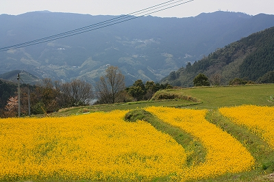
菜の花がまぶしいほどに咲き誇る、そんな峠近くに文殊院はあった。
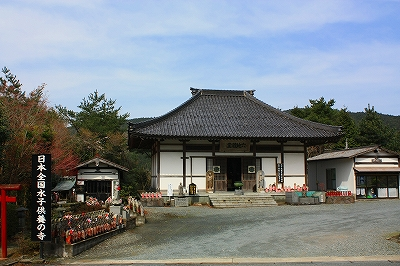
日本全国水子供養の寺とある。
本堂前には大きな賽の川原の看板などが掲げられていていかにも水子供養の寺といった雰囲気である。
で、境内の一角にあったやけにビビッドなお地蔵さん。
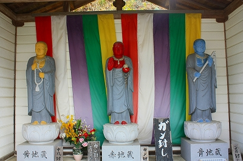
黄色が中風封じ、赤がガン封じ、青が心臓病封じとある。
赤、黄も凄いが青いお地蔵さんにはビックリした。信号かよ。
隅の方には立体賽の河原。子供たちが積んだ石を鬼が崩しているのをお地蔵さんが助けに来ている、の図。
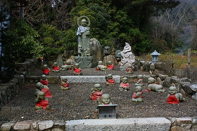
コドモ、石積んでねえし、鬼サボってるし…
お地蔵さん、こいつら少し喝入れてやって下さいよ…
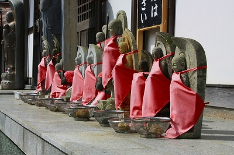 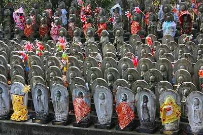
その他、六地蔵堂や水子地蔵の石像が並び、いかにも水子供養の寺、といった風情だ。
そんな中、異彩を放っているのがココ。
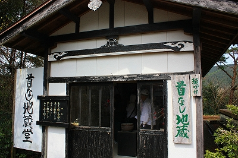
首なし地蔵…なんともミステリアスなネーミングではないか。
早速入ってみよう。
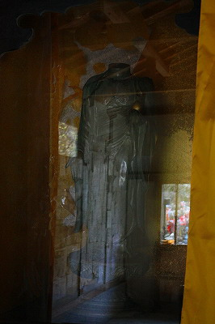
正面には1メートルほどの仏像が安置されているが首がない！
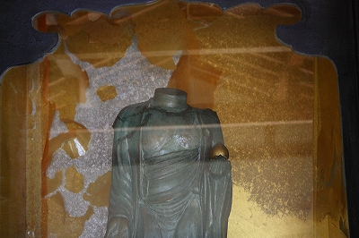
切り口を見る限り、最初から首なしの地蔵を作ったのかもしれない。
入口付近にはお地蔵さんの絵が掲げられているが…こーゆーのに落書きすんなよ。
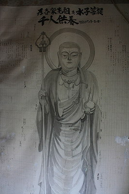 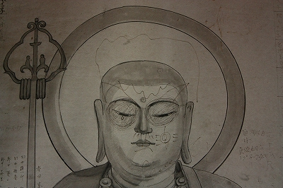
で、壁には具合が悪くなるくらいびっしりと紙のお札が貼られている。
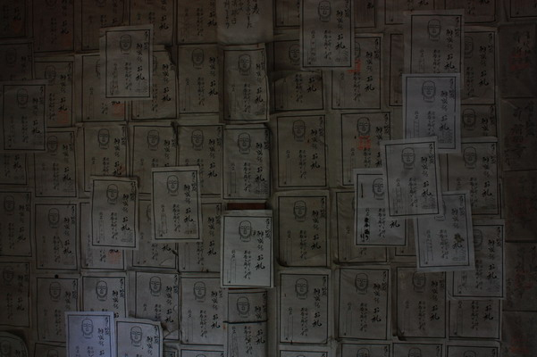 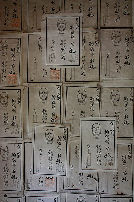
お地蔵さんの首がないので皆さんお願いをする際は首を奉納して下さい、て事なのだろう。
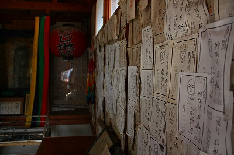
薄暗い堂内に貼られている大量のお札。お地蔵さんの頭部が印刷された紙がこんだけ並んでる光景は薄気味悪くさえある。
今回の篠栗霊場巡りのテーマである「民間信仰におけるマイナー信仰形態」のツボに入りまくりの奉納であった
日本全国には身体のパーツに似せたモノを奉納する習俗が数多く見られる。
有名なのは手型足型。そして乳絵馬あたりだろうか。あと身体のパーツじゃないがわらじ奉納とか。
そんな中でも頭を奉納するケースはないことはないが珍しいといっていいだろう。
そもそも何故ここのお地蔵さんの首がないのか？
ハイ、答えは壁に貼られてました。
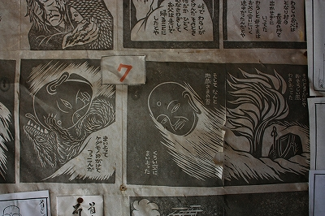
昔々、峠で村人がケダモノと遭遇。
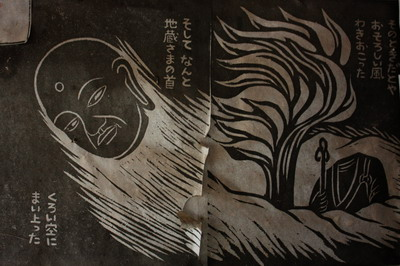
そのとき路傍のお地蔵さんの首が舞い上がり、ダイナマイト☆キッドばりのフライングヘッドバットが炸裂！
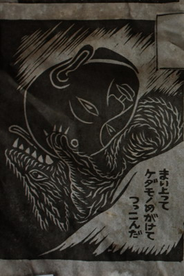
…というのがそもそもの謂れだとか。
実際、丸彫りの石仏などは頭部が取れやすいので、このような伝説が生まれたのだろうが、民話を発端とした信仰習俗の生成過程としては興味深いものがある。
首なし地蔵の外にはたくさんの水子地蔵の群れが並ぶ。
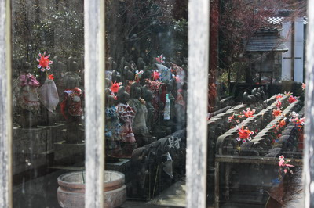
幼き子や姿すら見ぬ子を失った親の想いは判らんでもないが…
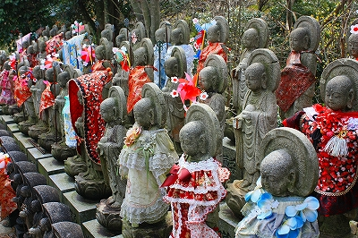
↓この衣装は如何なものだろう。
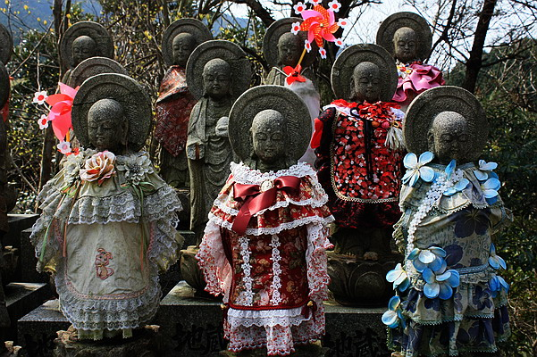
ロリータ系地蔵とでも言うんでしょうか…
まあ、これで若いママさんの気が済むのなら私は何も言いませんし、言えません…
ここで着目したいのはお地蔵さんって何でこんなにいじられキャラなんだ？ということ。
例えば観音サマとか閻魔サマとかいてもこういう風にコスプレされないでしょ。なぜかお地蔵さんだけが前掛けや帽子を付けられて、挙句の果てにはロリ地蔵なわけですよ。
これは私見だが、お地蔵さんは一番身近でなおかつヒーロー視されている存在なのだろう。
56億年後に人類を救済しに来るというアテにならない弥勒菩薩（借金だったらほとんど踏み倒しでしょ）とか妙にチャラチャラしてる観音菩薩に比べたら、自分より先に旅立った我が子を即決で救ってくれる地蔵菩薩の方が遥かに頼もしい存在だろう。
いわばお地蔵さんは最も身近で、かつ最も強く願う信仰「対象」なのだ。
人類の救済とか悟りを開くとかそんなオフィシャルな仏教が語る抽象的な奇麗事じゃなくて、死んだ我が子の救済、自分の現世利益、苦しみからの解放…そんな具体的で生々しい、しかも切羽詰った願いこそが多くの人々にとってのリアルな宗教的願望なのだ。
そんな個人と神仏を等価に見る事の出来るダイナミズムこそが民間信仰の本質であり魅力なのだと思う。
宗教なんて人間そのもの同様、奇麗事なんかじゃねえ！っつー事ですよ。
なのでこのロリータ地蔵にもある種の真理は含まれているのです。多分。
次の霊場へトライアル！
珍寺的篠栗霊場巡りTOPへ
珍寺大道場 HOME